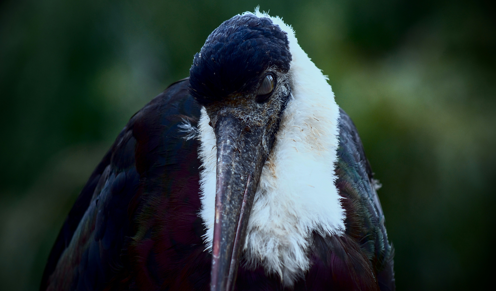

The Woolly-Necked Stork is a large dark-and-white stork with a distinctive white head and neck contrasting with a dark body. It usually forages alone or in pairs in open wetlands, grasslands, and agricultural fields, searching for frogs, fish, insects, reptiles, and other prey. It is generally less colonial than some other Indian storks and often keeps its distance from human activity.